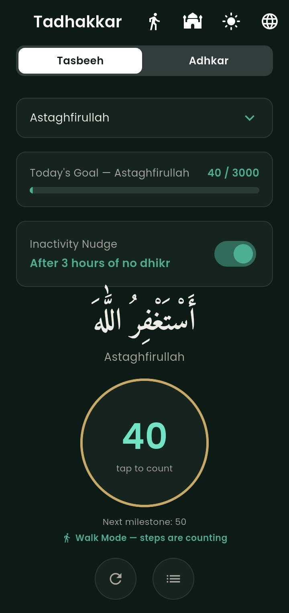
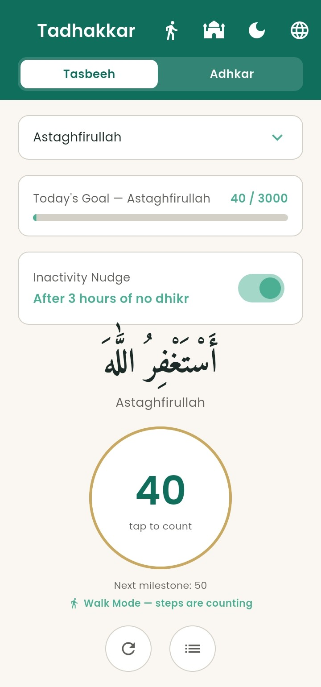

A Tasbeeh counter and Morning & Evening Adhkar companion — calm design, works fully offline, and switches between English and Arabic anytime.
Free, no account needed, no internet required to use it


A counting tool for daily dhikr, and a guided space for the adhkar said each morning and evening.
Fifteen dhikr phrases, each with its own count and daily goal. Count by tapping anywhere on the screen, pressing your volume buttons, or just walking — steps count automatically. Choose whichever fits the moment.
The full remembrances from Hisnul Muslim, with correct repetition counts and optional transliteration — plus a spoken Adhkar Sabah / Adhkar Masaa alert with a recitation of Ayat al-Kursi at the right time of day.
Adhan alerts for all 5 daily prayers. Choose your calculation method — Muslim World League (default), Umm al-Qura, Egyptian General Authority, ISNA, or Karachi — and your Asr madhab, then save and reschedule.
A voice announcement, in your chosen language, every 10 dhikr — automatically switching to every 100 once you pass the century mark, so long sessions stay quiet and focused.
Go quiet for a few hours — by default 3 — and the app gently nudges you with a spoken dhikr, chosen at random, rather than a generic alert.
Switch languages anytime — the whole interface, including layout direction, changes with you.
A calmer palette for Tahajjud and late-night remembrance, easy on tired eyes.
Set a personal target for each dhikr, watch your progress fill in through the day, and look back at your history whenever you like.
No account, no internet connection required to use it — everything you do is saved right on your device.
Tadhakkar isn't on the Play Store yet, so installation looks a little different from most apps. It takes about a minute.
Tap the download button below on your Android phone. The file is under 25MB and downloads directly — no account or sign-up required.
Find it in your Downloads folder or notification tray, then tap it to begin installing.
You may see a "Play Protect" warning — this is normal for apps outside the Play Store. Tap "Install anyway" to continue.Android will ask for permission to install from this source. Tap Settings, then turn on the toggle, and go back to install.
Choose your language, pick a dhikr, and start counting. Everything you do is saved on your device automatically.
Free forever. No account. Works without internet.
Replace the download links above with your hosted APK file and Amazon Appstore listing URL before publishing this page.